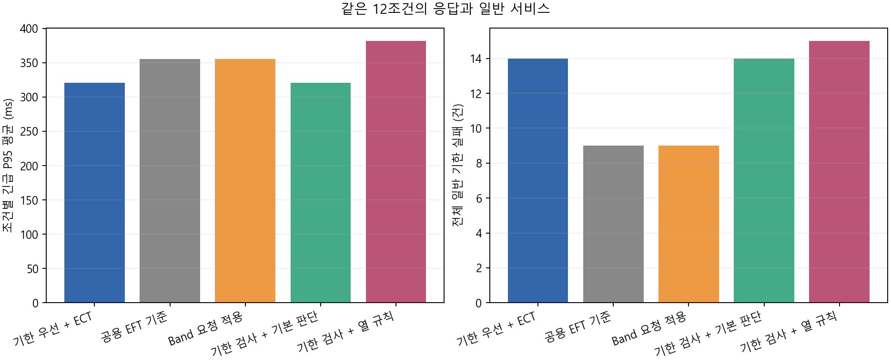
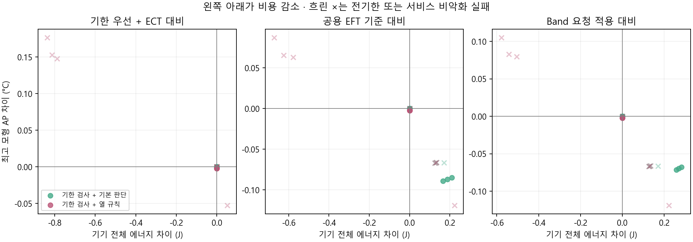
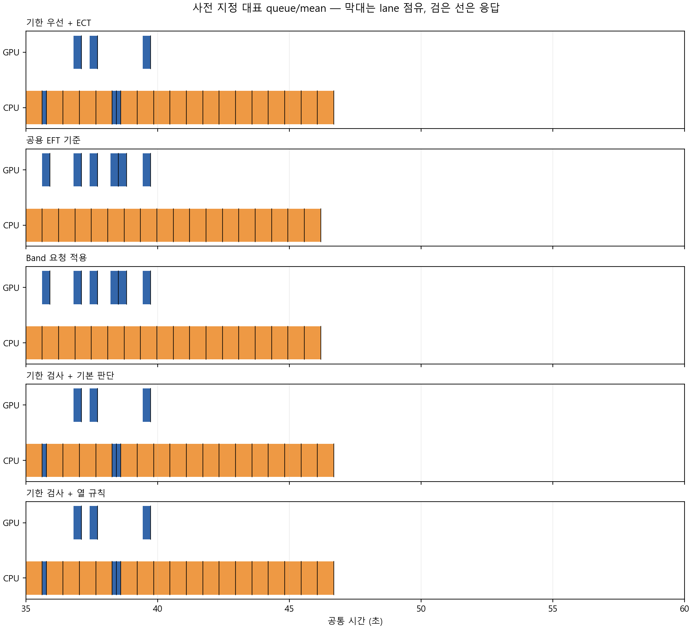
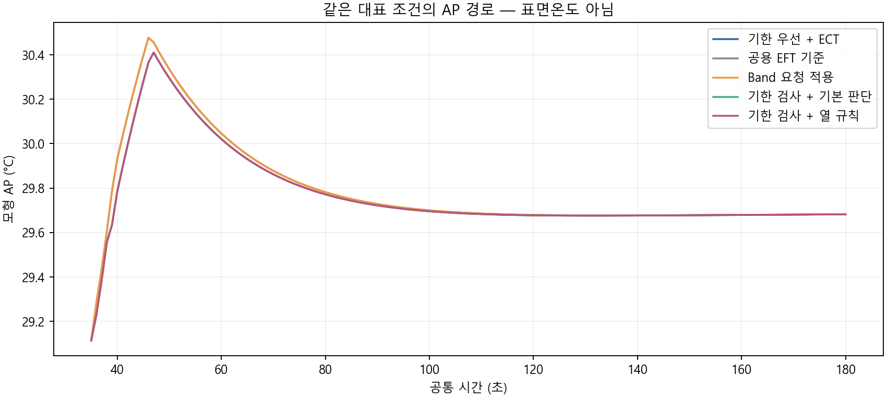
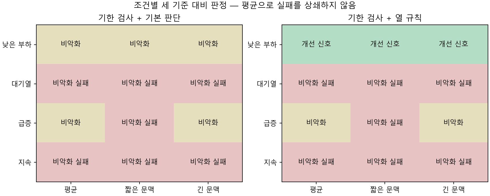

12조건 × 5정책 = 60행. Gate B PASS, Gate C PASS. 학습 0회·기기 0회. 최고 모형 AP는 표면온도가 아닙니다.
한국어 보고서 · 전체 결과 CSV · 조건별 비교 CSV · 실제 분기 근거
| 규칙 | 판단 |
|---|---|
| 기한 우선 + ECT | EDD 순서·ECT lane 완료 자원·필요 자원 대기 |
| 공용 EFT 기준 | 공용 예상 응답 최소·aging |
| Band 요청 적용 | 공개 HEFT 코드의 전체 요청 제한 적용 |
| 기한 검사 + 기본 판단 | 도착 큐 실제 기한 검사 후 EDD 기본 우선 |
| 기한 검사 + 열 규칙 | 같은 검사 뒤 에너지 비증가·최고 AP 최소 |
| 범위 | 정책 | 조건 | 완료 | 일반 실패 | 긴급 P95 ms | 전체 J | 모형 AP °C |
|---|---|---|---|---|---|---|---|
| all | 기한 우선 + ECT | 12 | 792 | 14 | 320.585950 | 152.413992 | 30.806121 |
| all | 공용 EFT 기준 | 12 | 792 | 9 | 355.655865 | 152.320476 | 30.850062 |
| all | Band 요청 적용 | 12 | 792 | 9 | 355.655865 | 152.299685 | 30.845730 |
| all | 기한 검사 + 기본 판단 | 12 | 792 | 14 | 320.585950 | 152.413992 | 30.806121 |
| all | 기한 검사 + 열 규칙 | 12 | 792 | 15 | 381.718124 | 152.215243 | 30.840907 |
| primary | 기한 우선 + ECT | 6 | 648 | 0 | 225.117283 | 162.870809 | 31.181075 |
| primary | 공용 EFT 기준 | 6 | 648 | 0 | 225.117283 | 162.777142 | 31.224596 |
| primary | Band 요청 적용 | 6 | 648 | 0 | 225.117283 | 162.735560 | 31.215931 |
| primary | 기한 검사 + 기본 판단 | 6 | 648 | 0 | 225.117283 | 162.870809 | 31.181075 |
| primary | 기한 검사 + 열 규칙 | 6 | 648 | 0 | 327.498016 | 162.464640 | 31.259429 |
| 부하 | 처리문맥 | 정책 | 예정 | 완료 | 일반 실패 | 긴급 P95 ms | 전체 J | AP °C |
|---|---|---|---|---|---|---|---|---|
| low | mean | 기한 우선 + ECT | 24 | 24 | 0 | 156.179931 | 142.123457 | 30.201317 |
| low | mean | 공용 EFT 기준 | 24 | 24 | 0 | 156.179931 | 142.123457 | 30.201317 |
| low | mean | Band 요청 적용 | 24 | 24 | 0 | 156.179931 | 142.123457 | 30.201317 |
| low | mean | 기한 검사 + 기본 판단 | 24 | 24 | 0 | 156.179931 | 142.123457 | 30.201317 |
| low | mean | 기한 검사 + 열 규칙 | 24 | 24 | 0 | 156.179931 | 142.123457 | 30.199132 |
| low | short_context | 기한 우선 + ECT | 24 | 24 | 0 | 156.179931 | 142.114177 | 30.200375 |
| low | short_context | 공용 EFT 기준 | 24 | 24 | 0 | 156.179931 | 142.114177 | 30.200375 |
| low | short_context | Band 요청 적용 | 24 | 24 | 0 | 156.179931 | 142.114177 | 30.200375 |
| low | short_context | 기한 검사 + 기본 판단 | 24 | 24 | 0 | 156.179931 | 142.114177 | 30.200375 |
| low | short_context | 기한 검사 + 열 규칙 | 24 | 24 | 0 | 156.179931 | 142.114177 | 30.198221 |
| low | long_context | 기한 우선 + ECT | 24 | 24 | 0 | 156.179931 | 142.132242 | 30.202209 |
| low | long_context | 공용 EFT 기준 | 24 | 24 | 0 | 156.179931 | 142.132242 | 30.202209 |
| low | long_context | Band 요청 적용 | 24 | 24 | 0 | 156.179931 | 142.132242 | 30.202209 |
| low | long_context | 기한 검사 + 기본 판단 | 24 | 24 | 0 | 156.179931 | 142.132242 | 30.202209 |
| low | long_context | 기한 검사 + 열 규칙 | 24 | 24 | 0 | 156.179931 | 142.132242 | 30.199994 |
| queue | mean | 기한 우선 + ECT | 24 | 24 | 3 | 294.054635 | 141.993716 | 30.410273 |
| queue | mean | 공용 EFT 기준 | 24 | 24 | 2 | 390.858113 | 141.863975 | 30.476843 |
| queue | mean | Band 요청 적용 | 24 | 24 | 2 | 390.858113 | 141.863975 | 30.476843 |
| queue | mean | 기한 검사 + 기본 판단 | 24 | 24 | 3 | 294.054635 | 141.993716 | 30.410273 |
| queue | mean | 기한 검사 + 열 규칙 | 24 | 24 | 3 | 294.054635 | 141.993716 | 30.410273 |
| queue | short_context | 기한 우선 + ECT | 24 | 24 | 3 | 286.608481 | 141.980384 | 30.406890 |
| queue | short_context | 공용 EFT 기준 | 24 | 24 | 2 | 375.688588 | 141.846591 | 30.473127 |
| queue | short_context | Band 요청 적용 | 24 | 24 | 2 | 375.688588 | 141.846591 | 30.473127 |
| queue | short_context | 기한 검사 + 기본 판단 | 24 | 24 | 3 | 286.608481 | 141.980384 | 30.406890 |
| queue | short_context | 기한 검사 + 열 규칙 | 24 | 24 | 3 | 286.608481 | 141.980384 | 30.406890 |
| queue | long_context | 기한 우선 + ECT | 24 | 24 | 4 | 301.500789 | 142.006554 | 30.413573 |
| queue | long_context | 공용 EFT 기준 | 24 | 24 | 2 | 406.027638 | 141.880866 | 30.480561 |
| queue | long_context | Band 요청 적용 | 24 | 24 | 2 | 406.027638 | 141.880866 | 30.480561 |
| queue | long_context | 기한 검사 + 기본 판단 | 24 | 24 | 4 | 301.500789 | 142.006554 | 30.413573 |
| queue | long_context | 기한 검사 + 열 규칙 | 24 | 24 | 4 | 301.500789 | 142.006554 | 30.413573 |
| burst | mean | 기한 우선 + ECT | 24 | 24 | 1 | 581.530782 | 141.863975 | 30.474213 |
| burst | mean | 공용 EFT 기준 | 24 | 24 | 1 | 581.530782 | 141.863975 | 30.474213 |
| burst | mean | Band 요청 적용 | 24 | 24 | 1 | 581.530782 | 141.863975 | 30.474213 |
| burst | mean | 기한 검사 + 기본 판단 | 24 | 24 | 1 | 581.530782 | 141.863975 | 30.474213 |
| burst | mean | 기한 검사 + 열 규칙 | 24 | 24 | 1 | 581.530782 | 141.863975 | 30.474213 |
| burst | short_context | 기한 우선 + ECT | 24 | 24 | 2 | 428.209336 | 142.017554 | 30.404166 |
| burst | short_context | 공용 EFT 기준 | 24 | 24 | 1 | 558.637886 | 141.846591 | 30.470539 |
| burst | short_context | Band 요청 적용 | 24 | 24 | 1 | 558.637886 | 141.846591 | 30.470539 |
| burst | short_context | 기한 검사 + 기본 판단 | 24 | 24 | 2 | 428.209336 | 142.017554 | 30.404166 |
| burst | short_context | 기한 검사 + 열 규칙 | 24 | 24 | 3 | 547.511022 | 142.069579 | 30.351477 |
| burst | long_context | 기한 우선 + ECT | 24 | 24 | 1 | 604.423678 | 141.880866 | 30.477890 |
| burst | long_context | 공용 EFT 기준 | 24 | 24 | 1 | 604.423678 | 141.880866 | 30.477890 |
| burst | long_context | Band 요청 적용 | 24 | 24 | 1 | 604.423678 | 141.880866 | 30.477890 |
| burst | long_context | 기한 검사 + 기본 판단 | 24 | 24 | 1 | 604.423678 | 141.880866 | 30.477890 |
| burst | long_context | 기한 검사 + 열 규칙 | 24 | 24 | 1 | 604.423678 | 141.880866 | 30.477890 |
| sustained | mean | 기한 우선 + ECT | 192 | 192 | 0 | 294.054635 | 183.618469 | 32.160906 |
| sustained | mean | 공용 EFT 기준 | 192 | 192 | 0 | 294.054635 | 183.431105 | 32.247947 |
| sustained | mean | Band 요청 적용 | 192 | 192 | 0 | 294.054635 | 183.348549 | 32.230616 |
| sustained | mean | 기한 검사 + 기본 판단 | 192 | 192 | 0 | 294.054635 | 183.618469 | 32.160906 |
| sustained | mean | 기한 검사 + 열 규칙 | 192 | 192 | 0 | 518.778121 | 182.805915 | 32.313500 |
| sustained | short_context | 기한 우선 + ECT | 192 | 192 | 0 | 286.608481 | 183.447208 | 32.146495 |
| sustained | short_context | 공용 EFT 기준 | 192 | 192 | 0 | 286.608481 | 183.237631 | 32.231392 |
| sustained | short_context | Band 요청 적용 | 192 | 192 | 0 | 286.608481 | 183.164308 | 32.214543 |
| sustained | short_context | 기한 검사 + 기본 판단 | 192 | 192 | 0 | 286.608481 | 183.447208 | 32.146495 |
| sustained | short_context | 기한 검사 + 열 규칙 | 192 | 192 | 0 | 490.709127 | 182.659890 | 32.294259 |
| sustained | long_context | 기한 우선 + ECT | 192 | 192 | 0 | 301.500789 | 183.789299 | 32.175147 |
| sustained | long_context | 공용 EFT 기준 | 192 | 192 | 0 | 301.500789 | 183.624240 | 32.264336 |
| sustained | long_context | Band 요청 적용 | 192 | 192 | 0 | 301.500789 | 183.530626 | 32.246528 |
| sustained | long_context | 기한 검사 + 기본 판단 | 192 | 192 | 0 | 301.500789 | 183.789299 | 32.175147 |
| sustained | long_context | 기한 검사 + 열 규칙 | 192 | 192 | 0 | 486.961056 | 182.952159 | 32.351468 |




